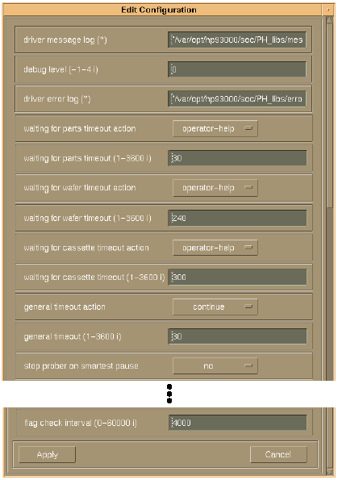

Changing Configuration Parameters with the Editor
Calling the function ph_interactive_configuration from the application model lets you change the settings of configuration parameters at run-time with a designated editor.
Typically, this function would be called from the PAUSE section of the application model.
The function opens the main window of the editor for driver configurations, as described in Editing a Driver Configuration File, but with the following modifications:
- The editor only displays parameters that were not disabled for changes at run-time in the configuration loaded at driver start-up.
- Deleting and adding parameters is not supported.
- When pressing the Apply button, the editor checks whether the changes are in compliance with the attributes definitions. If this is met, the internal parameter settings of the driver are changed accordingly, and the editor is closed.
Apart from the modifications listed above, you can use the editor in the same way as described in Editing the Global Configuration.
The figure below shows the configuration editor window for changes at run-time.

Note When changing configuration parameters at run-time with the editor, mind that
some parameters cannot be changed individually, as other parameter settings must correspond to
the settings of these parameters. Always change all related parameters to avoid inconsistencies.
For example, when changing the number of elements in the handler_site_ids parameter, the
parameters handler_site_mask and smartest_ site_to_handler_site_map must be changed
correspondingly.